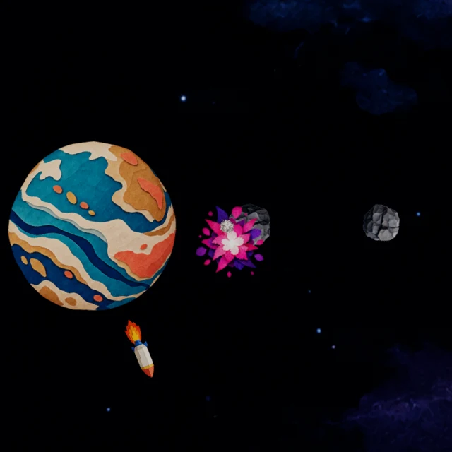
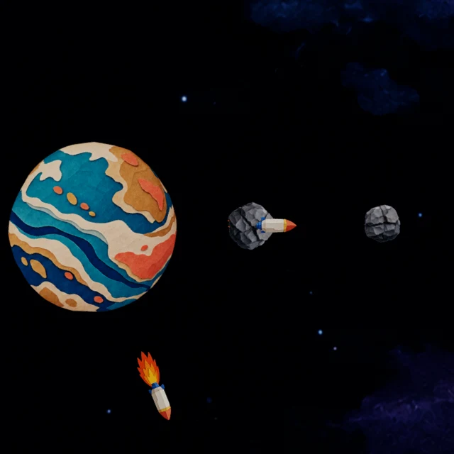
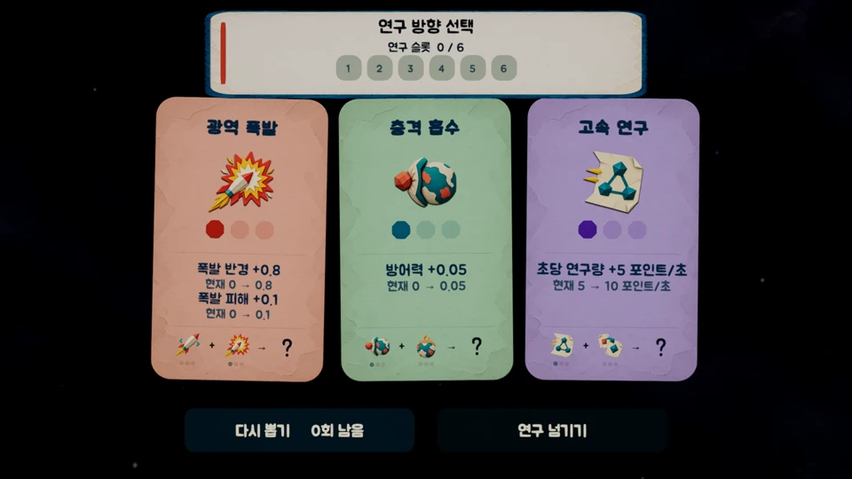

미사일 전투
미사일이 소행성에 맞으면 피해를 줍니다. 선택한 강화에 따라 폭발이 일어나거나, 미사일이 관통하여 지나가는 등의 효과를 일으킵니다.
게임 소개
플레이어는 중앙 행성에 접근하는 소행성 중 어느 방향부터 요격할지 판단합니다. 소행성을 파괴해 연구 포인트를 모으면 강화 카드를 고를 수 있습니다. 방어력을 높여 행성을 지키거나, 미사일을 강화해 밀려오는 소행성을 처리할 수 있습니다.

소행성을 파괴해 연구 포인트를 채우면 강화 카드가 열립니다. 선택한 카드에 따라 능력치가 바뀌거나 새 효과가 활성화되고, 조합 조건을 충족하면 최종 강화가 열립니다.


미사일이 소행성에 맞으면 피해를 줍니다. 선택한 강화에 따라 폭발이 일어나거나, 미사일이 관통하여 지나가는 등의 효과를 일으킵니다.
소행성 종류마다 생성에 필요한 점수가 다릅니다. 게임은 웨이브마다 등장 가능한 종류와 점수가 쌓이는 속도를 정합니다.
계산 예시 (가상의 수치) · 10점이 필요한 소행성이 뽑혔을 때 전용 점수가 6점이면 생성을 미룹니다. 시간이 지나 전용 점수가 12점이 된 뒤 소행성이 등장하면 10점을 써서 2점이 남습니다.
일반 소행성의 추첨 시점일반 소행성 중 가장 많은 점수가 필요한 종류까지 생성할 수 있을 때 추첨합니다. 적은 점수로 생성할 수 있는 종류만 반복해서 나오는 일을 줄이기 위해서입니다.
시작 행성부터 웨이브 진행, 연구 선택, 보스전, 한 판의 종료까지 주요 게임 이벤트를 수집합니다.
수집 범위수집에 동의한 플레이만 전송하며, 테스트 플레이는 집계 대상에서 제외합니다.
전송 실패 시기록을 기기에 남겨 다음 랭킹 조회 때 다시 시도합니다. 전송 중 더 좋은 점수가 저장돼도 이전 응답이 새 기록의 대기 상태를 해제하지 않습니다.
ScriptableObject에 능력치·외형 변경과 특수 효과를 설정합니다.SelectedLocaleChanged 이벤트에 맞춰 도감과 연구 슬롯 문구를 갱신합니다.PlayerPrefs에 저장하고, 적용 없이 닫으면 설정을 열기 전 언어로 돌립니다.플레이 중 첫 소행성이 파괴될 때 화면이 멈칫했습니다. 이펙트와 효과음을 따로 켜고 비교해 첫 효과음 재생에서 지연이 더 컸다는 점을 확인했습니다.
폭발·피격 이펙트를 전투 전에 초기화하고 렌더링해, 파괴 순간에는 풀에서 꺼내 쓰도록 요청했습니다. 재현 실험에서는 파괴음 3종도 전투 전에 로드했습니다.
같은 소행성의 첫 파괴를 두 최적화의 적용 전후로 비교했습니다. 적용 후에는 준비된 이펙트를 재사용하고, 이미 로드한 파괴음을 재생해 첫 파괴 프레임이 짧아졌습니다.
Unity Editor에서 동일한 소행성을 적용 전후 각각 4회 파괴해 측정한 첫 파괴 프레임의 중앙값입니다.
일반 웨이브 후반에는 생성 점수가 더 빨리 쌓여 소행성의 등장 간격이 대체로 짧아집니다. 그래도 예전에는 비용이 큰 소행성이 뽑히고 점수가 부족하면, 이미 등장할 수 있는 일반 소행성까지 잠깐 기다렸습니다.
두 그룹에 쓸 점수를 따로 모음
검증 결과10분 분량의 생성 시뮬레이션에서 생성 비용이 큰 소행성에 쓸 점수를 모으는 동안에도 일반 소행성이 계속 나왔습니다. 수정한 코드는 Unity 컴파일을 통과했습니다.
두 사례의 코드 수정과 검증에는 Codex를 활용했습니다.
대표작 상세